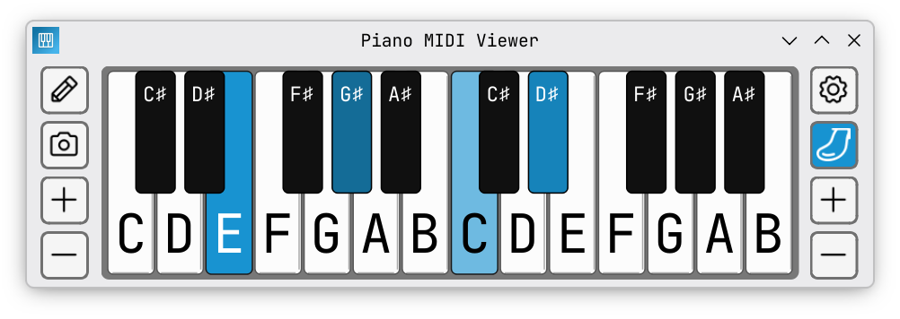

The app is safe — Windows and some antivirus software flag apps without a paid certificate. We skip that cost so the app stays free. Anyone can check the source code.
xattr -cr /Applications/PianoMIDIViewer.app
The app is safe — macOS blocks apps without a paid Apple certificate. We skip that cost so the app stays free. Anyone can check the source code.
The app is safe — downloaded files just need to be marked as executable before they can run. Anyone can check the source code.

Free, open source, no subscription, no catch.
• Play a note on your digital piano — it lights up on a clean, simple keyboard on your screen.
• Share it in a video call so everyone can see what you're playing, or put it in a YouTube video for your viewers.
• It's not a library or a synth — it's a visual tool.
• Connect your digital piano with a USB cable. No drivers needed — the app finds it automatically.
• Most video call apps can share the piano window alongside your webcam — no extra software required.
• Our setup guide covers every major video call app.
• Draw scales, chords, or any notes directly on the keyboard with the pencil tool.
• Save screenshots with one click. Build a library of cards, or use it live during a lesson to explain something.
This is a solo passion project with no budget and no company behind it. I'm not a professional developer — I built this because I needed it and nothing like it existed.
There are no tricks, no ads, no tracking, no account needed. The app works completely offline. I believe education should be a right, not a privilege — so this will always be free.
If you found the app useful — please share it. And if something's off or you have an idea — send me a message.
This app gets better because of people like you. If something's broken, confusing, or missing — or you just thought of a feature you'd love to see — tell me! No idea is too small, and you don't need an account or anything fancy. Just type and send.